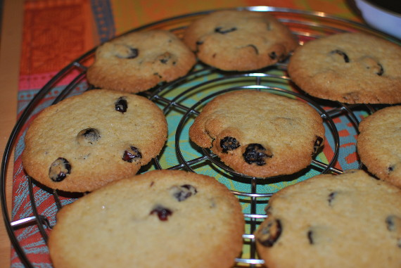

Cranberry-Cookies

- Zubereitung: ca. 20 Minuten
- Backzeit: ca. 15 Minuten pro Blech
Zutaten
- 250 g Mehl
- 1/2 TL Backpulver
- 1/2 TL Natron
- 1 Prise Salz
- 200 g weiche Butter
- 150 g brauner Zucker
- 1 Pck. Vanillezucker
- 1 Ei
- 3 EL Orangensaft
- 100 g getrocknete Cranberries
Zubereitung
- Den Backofen auf 180° Celsius (Umluft: 160° Celsius) vorheizen. Zwei Backbleche mit Backpapier auslegen. Mehl, Backpulver, Natron und Salz in einer Schüssel mischen.
- Die Butter, den Zucker und den Vanillezucker in einer zweiten Schüssel schaumig rühren. Das Ei unterheben. Die Mehlmischung und den Orangensaft unterrühren. Die getrockneten Cranberries sorgfältig unterheben.
- Mit 2 Esslöffeln kleine Häufchen auf die Backbleche setzen. Jeweils im Backofen (Mitte) in 15 Minuten goldbraun backen.
- Die Cookies aus dem Backofen nehmen, mit dem Backpapier auf ein Kuchengitter ziehen und auskühlen lassen.